数据状态管理
globalThis
ArkTS引擎实例内部的一个全局对象，在ArkTS引擎实例内部都能访问,每个应用都有且仅有一个globalThis，引擎内部的UIAbility/ExtensionAbility/Page都可以使用，因此可以使用globalThis全局对象进行数据同步。当给globalThis设置值的时候，如果值不存在则新增，存在则替换。所以在赋值的时候一定要注意这一点。
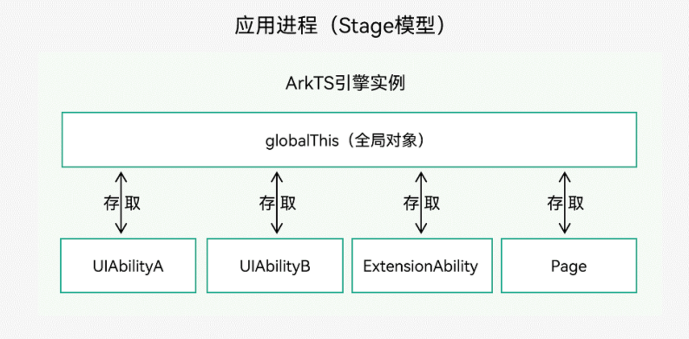
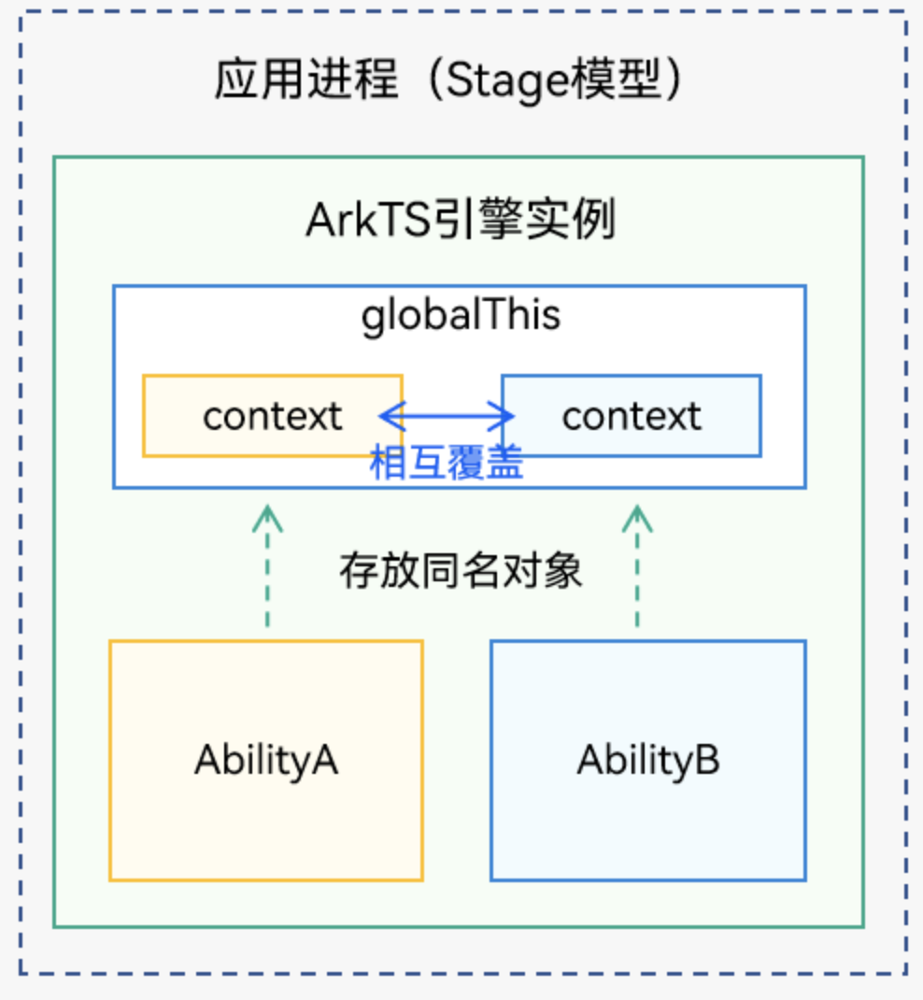
globalThis 使用
1 | * globalThis 赋值 |
EventHub
基于发布订阅模式来实现，事件需要先订阅后发布，订阅者收到消息后进行处理。目前测试只能从页面触发事件给UIAbility进行响应。
EventHub主要包含3个函数，分别是订阅事件、取消订阅事件和发布事件。
基类context提供了EventHub对象，通过context获取eventHub对象，实现组件级别的事件传递机制。
要想实现更丰富的消息传递和订阅，可以参考emitter【@ohos.events.emitter (Emitter)】和 @ohos.commonEventManager (公共事件模块)
订阅事件
EventHub.on
on(event: string, callback: Function): void;
event：事件名称
callback： 事件回调，事件触发后执行
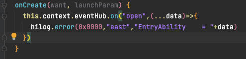
发布事件
EventHub.emit
emit(event: string, …args: Object[]): void;
event：事件名称
args：可变参数，事件触发时，传递给回调函数的参数。
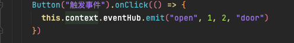
取消订阅事件
EventHub.off
off(event: string, callback?: Function): void;
event：事件名称
callback：当callback传值时，取消订阅指定的callback；未传值时，取消订阅该事件下所有callback。
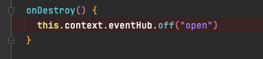
localstorage 页面级UI状态存储
页面级UI状态存储，通过@Entry装饰器接收的参数可以在页面内共享同一个LocalStorage实例。LocalStorage也可以在UIAbility内，页面间共享状态。
- 应用程序可以创建多个LocalStorage实例，LocalStorage实例可以在页面内共享，也可以通过GetShared接口，获取在UIAbility里创建的GetShared，实现跨页面、UIAbility内共享。
- 组件树的根节点，即被@Entry装饰的@Component，可以被分配一个LocalStorage实例，此组件的所有子组件实例将自动获得对该LocalStorage实例的访问权限；
- 被@Component装饰的组件最多可以访问一个LocalStorage实例和AppStorage，未被@Entry装饰的组件不可被独立分配LocalStorage实例，只能接受父组件通过@Entry传递来的LocalStorage实例。一个LocalStorage实例在组件树上可以被分配给多个组件。
- LocalStorage中的所有属性都是可变的。
应用程序决定LocalStorage对象的生命周期。当应用释放最后一个指向LocalStorage的引用时，比如销毁最后一个自定义组件，LocalStorage将被JS Engine垃圾回收。
LocalStorage根据与@Component装饰的组件的同步类型不同，提供了两个装饰器：
- @LocalStorageProp：@LocalStorageProp装饰的变量和与LocalStorage中给定属性建立单向同步关系。
- @LocalStorageLink：@LocalStorageLink装饰的变量和在@Component中创建与LocalStorage中给定属性建立双向同步关系。
限制条件
- LocalStorage创建后，命名属性的类型不可更改。后续调用Set时必须使用相同类型的值。
- LocalStorage是页面级存储，GetShared接口仅能获取当前Stage通过windowStage.loadContent传入的LocalStorage实例，否则返回undefined。
@LocalStorageProp(key)
1 | @LocalStorageProp(key)是和LocalStorage中key对应的属性建立单向数据同步，我们允许本地改变的发生，但是对于@LocalStorageProp，本地的修改永远不会同步回LocalStorage中，相反，如果LocalStorage给定key的属性发生改变，改变会被同步给@LocalStorageProp，并覆盖掉本地的修改。 |
装饰器使用规则说明
| @LocalStorageProp变量装饰器 | 说明 |
|---|---|
| 装饰器参数 | key：常量字符串，必填（字符串需要有引号）。 |
| 允许装饰的变量类型 | Object、class、string、number、boolean、enum类型，以及这些类型的数组。嵌套类型的场景请参考观察变化和行为表现。类型必须被指定，且必须和LocalStorage中对应属性相同。不支持any，不允许使用undefined和null。 |
| 同步类型 | 单向同步：从LocalStorage的对应属性到组件的状态变量。组件本地的修改是允许的，但是LocalStorage中给定的属性一旦发生变化，将覆盖本地的修改。 |
| 被装饰变量的初始值 | 必须指定，如果LocalStorage实例中不存在属性，则作为初始化默认值，并存入LocalStorage中。 |
变量的传递/访问规则说明
| 传递/访问 | 说明 |
|---|---|
| 从父节点初始化和更新 | 禁止，@LocalStorageProp不支持从父节点初始化，只能从LocalStorage中key对应的属性初始化，如果没有对应key的话，将使用本地默认值初始化。 |
| 初始化子节点 | 支持，可用于初始化@State、@Link、@Prop、@Provide。 |
| 是否支持组件外访问 | 否。 |
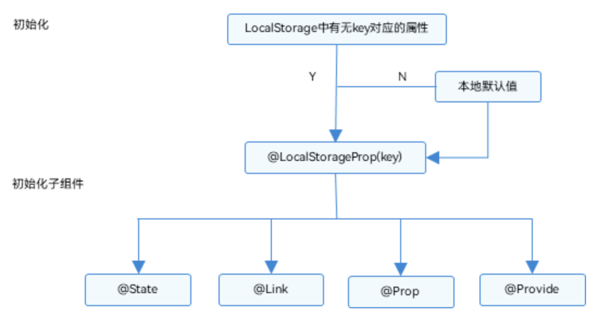
@LocalStorageLink(key)
1 | 如果我们需要将自定义组件的状态变量的更新同步回LocalStorage，就需要用到@LocalStorageLink。 |
装饰器使用规则说明
| @LocalStorageLink变量装饰器 | 说明 |
|---|---|
| 装饰器参数 | key：常量字符串，必填（字符串需要有引号）。 |
| 允许装饰的变量类型 | Object、class、string、number、boolean、enum类型，以及这些类型的数组。嵌套类型的场景请参考观察变化和行为表现。类型必须被指定，且必须和LocalStorage中对应属性相同。不支持any，不允许使用undefined和null。 |
| 同步类型 | 双向同步：从LocalStorage的对应属性到自定义组件，从自定义组件到LocalStorage对应属性。 |
| 被装饰变量的初始值 | 必须指定，如果LocalStorage实例中不存在属性，则作为初始化默认值，并存入LocalStorage中。 |
变量的传递/访问规则说明
| 传递/访问 | 说明 |
|---|---|
| 从父节点初始化和更新 | 禁止，@LocalStorageLink不支持从父节点初始化，只能从LocalStorage中key对应的属性初始化，如果没有对应key的话，将使用本地默认值初始化。 |
| 初始化子节点 | 支持，可用于初始化@State、@Link、@Prop、@Provide。 |
| 是否支持组件外访问 | 否。 |
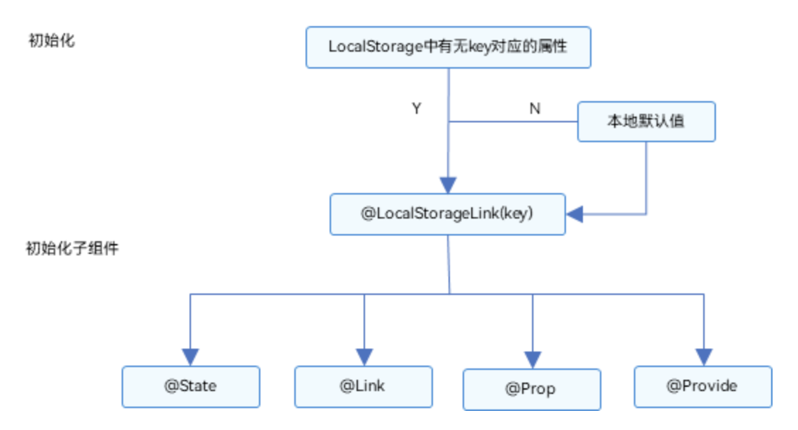
使用场景
UI内部使用LocalStorage
在同一个page页面中，所有Component共享一个localstorage，通过LocalStorageLink绑定的数据在修改以后会会写到LocalStorage中，这时候会影响LocalStorageLink和LocalStorageProp绑定的数据，但是通过LocalStorageProp不会回写到LocalStorage中，只会影响当前LocalStorageProp绑定的数据，而LocalStorageLink绑定的数据不受影响。
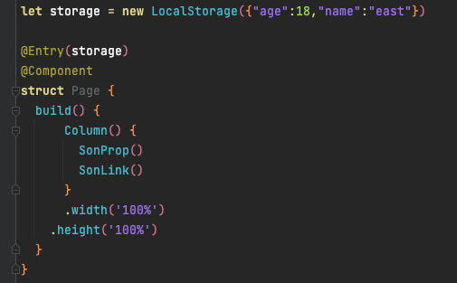
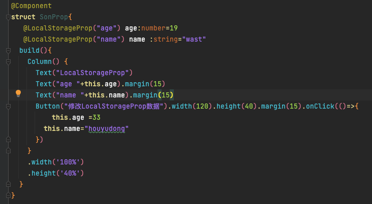
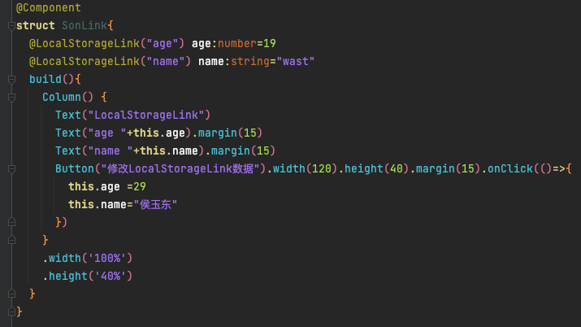
UIAbility在多个UI页面共享一个 LocalStorage
在UIAbility中创建LocalStorage，并通过loadContent传递给page，在page中通过调用LocalStorage.GetShared()获得storage实例，以达到多UI页面共享一个storage的效果。

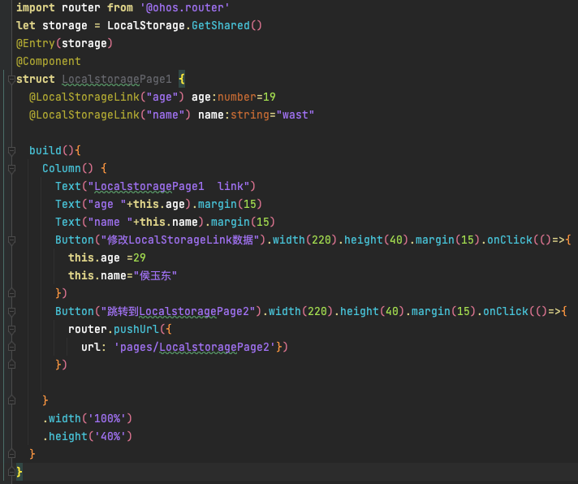
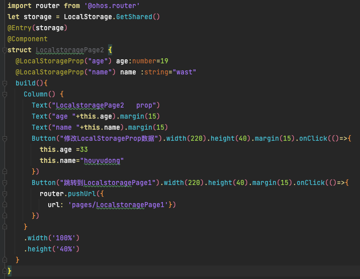
AppStorage 应用全局的UI状态存储
AppStorage是应用全局的UI状态存储，是和应用的进程绑定的，由UI框架在应用程序启动时创建，为应用程序UI状态属性提供中央存储。
AppStorage是在应用启动的时候会被创建的单例。它的目的是为了提供应用状态数据的中心存储，这些状态数据在应用级别都是可访问的。AppStorage将在应用运行过程保留其属性。属性通过唯一的键字符串值访问。
AppStorage可以和UI组件同步，且可以在应用业务逻辑中被访问。
AppStorage中的属性可以被双向同步，数据可以是存在于本地或远程设备上，并具有不同的功能，比如数据持久化。这些数据是通过业务逻辑中实现，与UI解耦，如果希望这些数据在UI中使用，需要用到@StorageProp和@StorageLink 。
AppStorage.SetOrCreate(‘age’, 47); 该函数在应用中创建了一个age字段，并赋值初始值为47.这时候可以在页面中使用@StorageProp和@StorageLink去关联这个字段，当然，我们也可以直接使用@StorageProp和@StorageLink区关联一个字段，他会先去判断AppStorage中是否有这个字段，如果没有就会在AppStorage中去创建一个字段，初始值则为设置的初始值。当我们结束应用以后，存储的数据会消失，下一次再次使用又会变成初始值，如果要记录上一次修改的数据就需要用到PersistentStorage持久化存储。
PersistentStorage 持久化存储UI状态
要将数据持久化保存，我们可以先使用PersistentStorage.PersistProp(‘age’, 47);来设置字段，这时候再用@StorageProp和@StorageLink去关联该字段，就可以对数据进行持久化保存，当然，StorageProp修改的数据并不会写回PersistentStorage中，只有StorageLink关联的字段才会修改并保存。
Environment：设备环境查询
Environment是ArkUI框架在应用程序启动时创建的单例对象。它为AppStorage提供了一系列描述应用程序运行状态的属性。Environment的所有属性都是不可变的（即应用不可写入），所有的属性都是简单类型。
1、将设备的语言code存入AppStorage，默认值为en
Environment.EnvProp(‘languageCode’, ‘en’);
2、获取存入的设备语言
@StorageProp(‘languageCode’) lang : string = ‘en’;
注意：获取的数据修改不会进行持久化，当进程结束后再次打开又变成默认值
内置环境变量说明：
| key | 类型 | 说明 |
|---|---|---|
| accessibilityEnabled | boolean | 无障碍屏幕朗读是否启用。 |
| colorMode | ColorMode | 深浅色模式，可选值为：- ColorMode.LIGHT：浅色模式；- ColorMode.DARK：深色模式。 |
| fontScale | number | 字体大小比例。 |
| fontWeightScale | number | 字重比例。 |
| layoutDirection | LayoutDirection | 布局方向类型，可选值为：- LayoutDirection.LTR：从左到右；- LayoutDirection.RTL：从右到左。 |
| languageCode | string | 当前系统语言，小写字母，例如zh。 |
状态管理
@State 装饰器
@State装饰的变量，或称为状态变量，一旦变量拥有了状态属性，就和自定义组件的渲染绑定起来。当状态改变时，UI会发生对应的渲染改变。
@State装饰的变量，与声明式范式中的其他被装饰变量一样，是私有的，只能从组件内部访问，在声明时必须指定其类型和本地初始化。初始化也可选择使用命名参数机制从父组件完成初始化。
@State装饰的变量拥有以下特点：
@State装饰的变量与子组件中的@Prop、@Link或@ObjectLink装饰变量之间建立单向或双向数据同步。
@State装饰的变量生命周期与其所属自定义组件的生命周期相同。
注意：不支持any，不支持嵌套属性的赋值，不支持Length、ResourceStr、ResourceColor类型，Length、ResourceStr、ResourceColor ，不支持简单类型和复杂类型的联合类型，不允许使用undefined和null。被装饰的变量必须本地初始化。
1 | @Component |
@Prop 装饰器
@Prop装饰的变量可以和父组件建立单向的同步关系。@Prop装饰的变量是可变的，但是变化不会同步回其父组件。
@Prop装饰的变量和父组件建立单向的同步关系：
- @Prop变量允许在本地修改，但修改后的变化不会同步回父组件。
- 当父组件中的数据源更改时，与之相关的@Prop装饰的变量都会自动更新。如果子组件已经在本地修改了@Prop装饰的相关变量值，而在父组件中对应的@State装饰的变量被修改后，子组件本地修改的@Prop装饰的相关变量值将被覆盖。
注意：
- @Prop修饰复杂类型时是深拷贝，在拷贝的过程中除了基本类型、Map、Set、Date、Array外，都会丢失类型。
- @Prop装饰器不能在@Entry装饰的自定义组件中使用。
- @Prop和数据源类型需要相同
1 | @Entry |
@Link 装饰器
@Link装饰的变量与其父组件中的数据源共享相同的值。
1 | @Entry |
@Provide和@Consume 装饰器
@Provide和@Consume，应用于与后代组件的双向数据同步，应用于状态数据在多个层级之间传递的场景。不同于上文提到的父子组件之间通过命名参数机制传递，@Provide和@Consume摆脱参数传递机制的束缚，实现跨层级传递。
其中@Provide装饰的变量是在祖先节点中，可以理解为被“提供”给后代的状态变量。@Consume装饰的变量是在后代组件中，去“消费（绑定）”祖先节点提供的变量。
使用方式：
- 通过相同的变量名绑定
- @Provide count: number = 10;
- @Consume count: number;
- 通过相同的变量别名绑定
- @Provide(‘count’) b: number = 10;
- @Consume(‘count’) c: number;
1 | //父类和子孙类双向数据同步 |
@Observed和@ObjectLink 装饰器
@ObjectLink和@Observed类装饰器用于在涉及嵌套对象或数组的场景中进行双向数据同步：
- 被@Observed装饰的类，可以被观察到属性的变化；
- 子组件中@ObjectLink装饰器装饰的状态变量用于接收@Observed装饰的类的实例，和父组件中对应的状态变量建立双向数据绑定。这个实例可以是数组中的被@Observed装饰的项，或者是class object中的属性，这个属性同样也需要被@Observed装饰。
- 单独使用@Observed是没有任何作用的，需要搭配@ObjectLink或者@Prop使用。
@Watch 装饰器
@Watch应用于对状态变量的监听。如果开发者需要关注某个状态变量的值是否改变，可以使用@Watch为状态变量设置回调函数。
用于监听状态变量的变化，当状态变量变化时，@Watch的回调方法将被调用。
使用场景
@Watch和@State回调监听更新
1 | @Entry |
@Watch和@Prop回调监听更新
1 | @Entry |
@Watch和@Link回调监听
1 | @Entry |